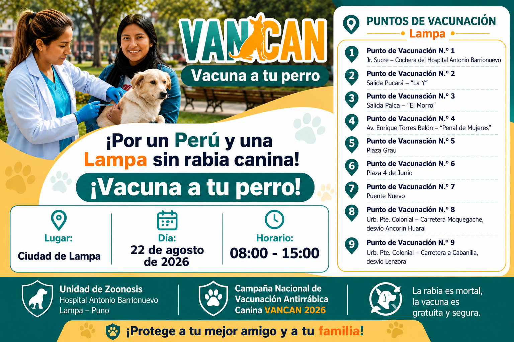

El Hospital Antonio Barrionuevo de Lampa, a través de la Unidad de Zoonosis, desarrollará la Campaña Nacional de Vacunación Antirrábica Canina VANCAN 2026 en el ámbito de su jurisdicción.
La vacunación es gratuita y está dirigida a los perros mayores de tres meses de edad, con la finalidad de prevenir la rabia y proteger la salud de la población.
Meta programada
Meta institucional
Puntos de vacunación
El Hospital Antonio Barrionuevo implementará nueve (09) puntos fijos de vacunación estratégicamente distribuidos en la ciudad de Lampa.
Los puntos estarán habilitados el día 22 de agosto de 2026, con el propósito de facilitar el acceso de la población a la vacuna antirrábica canina y contribuir al cumplimiento de la meta programada.
Asimismo, en las comunidades pertenecientes a su jurisdicción, la vacunación antirrábica canina se desarrollará desde el 20 de julio hasta el 30 de setiembre de 2026, previa coordinación con las autoridades locales.

Haga clic en la imagen para verla en tamaño completo.
La rabia es una enfermedad mortal que puede afectar a los animales y a las personas.
Vacunar a tu perro contribuye a proteger a tu familia y a la comunidad.
La vacunación antirrábica canina durante la campaña VANCAN 2026 es gratuita.
Unidad de Zoonosis
Lampa – Puno
Celular: +51 962 244 742
Campaña Nacional de Vacunación Antirrábica Canina VANCAN 2026
Lunes a viernes
08:00 a. m. – 02:00 p. m.
Información y orientación sobre la campaña VANCAN 2026.
La rabia puede prevenirse. Participa en la Campaña Nacional de Vacunación Antirrábica Canina VANCAN 2026.
Encuentra tu punto de vacunación